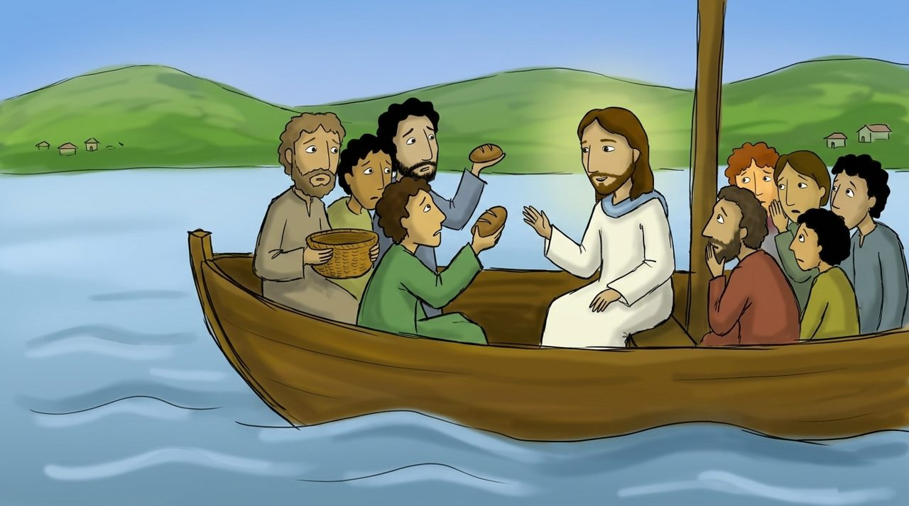
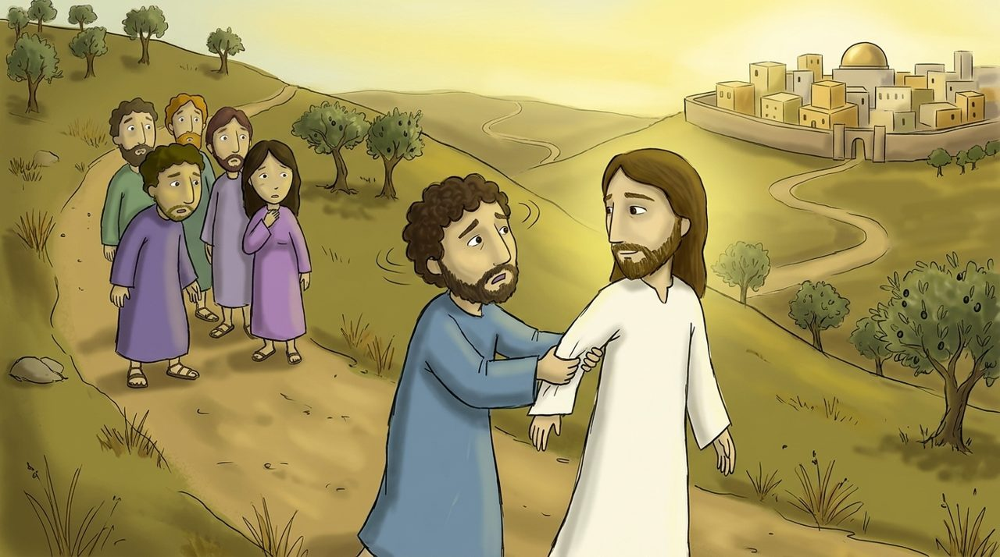
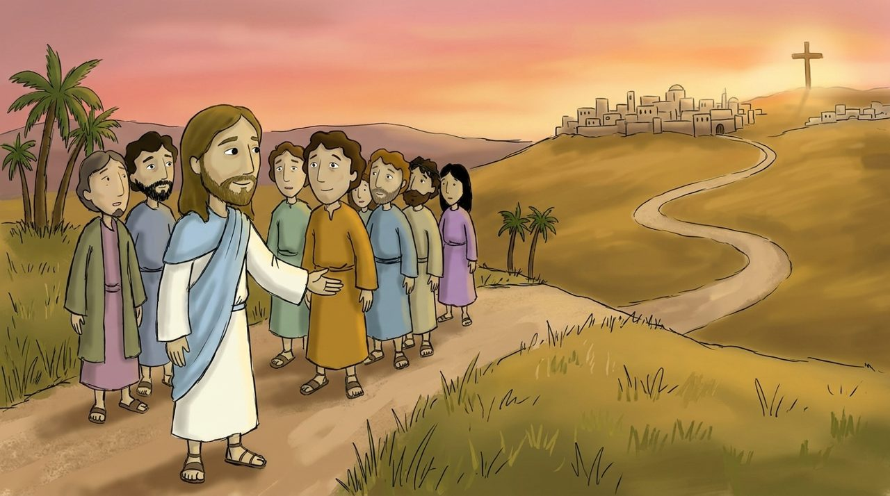

Uşaqlar üçün Müqəddəs Kitab dərsi · Matta, 21-ci dərs
Siz Məni kim hesab edirsiniz?
Matta 16:1–28
Sarı sözlərə toxun, mənası çıxacaq. 🔊 düyməsi Azərbaycan dilində oxuyur.
Bu gün nə öyrənəcəyik?
Peterin İsanı “Məsih” deyə etiraf etdiyini öyrənəcəyik.
İsanın bizim üçün əzab çəkəcəyini əvvəlcədən dediyini öyrənəcəyik.
“İsa mənim üçün kimdir?” sualına cavab verəcəyik.

Səhnə 1 · Matta 16:1–12
Çörəyi unudan şagirdlər
Şagirdlər qayıqla o taya keçəndə çörək götürməyi unutdular. İsa “Fariseylərin sından çəkinin” deyəndə şagirdlər bunun çörək haqqında olduğunu sandılar.
İsa beş min və dörd min nəfəri doyurduğunu yadlarına saldı. Maya fariseylərin yanlış təlimi idi. İsa varsa, çörək üçün narahat olmağa ehtiyac yoxdur.
Səhnə 2 · Matta 16:13–20
Sən Məsihsən
İsa soruşdu: “İnsanlar Məni kim hesab edir?” Şagirdlər “Vəftizçi Yəhya, İlyas, Yeremya deyirlər” deyə cavab verdilər. “Bəs siz Məni kim hesab edirsiniz?”
Peter cavab verdi: “Sən sən, var olan Allahın Oğlusan.” İsa sevindi: “Bunu sənə Səmavi Atam açıb. Mən bu üzərində Öz imi quracağam.”

Səhnə 3 · Matta 16:21–23
Peter mane olmaq istədi
O vaxtdan İsa Yerusəlimdə əzab çəkəcəyini, öldürüləcəyini və üçüncü gün diriləcəyini deməyə başladı.
Peter İsanı kənara çəkib dedi: “Bu heç vaxt Sənin başına gəlməsin!” İsa dedi: “Sən Allahın işlərini deyil, insan işlərini düşünürsən.”

Səhnə 4 · Matta 16:24–28
Ardımca gəl
İsa dedi: “Kim Mənim ardımca gəlmək istəyirsə, özünü inkar etsin, öz ını götürüb ardımca gəlsin.”
“İnsan bütün dünyanı qazanıb öz ını itirsə, bunun ona nə faydası var?” İsanın ardınca getmək ən qiymətli yoldur.
Bu həftənin əzbər ayəsi
“Sən Məsihsən, var olan Allahın Oğlusan.”
Matta 16:16 · uşaqlar üçün sadə dildə
Sən , var olan .
Boş yerlər üçün sözləri ardıcıl seç.
Söz lüğəti
Toxun, mənasına bax
Yoxlama sualları
4 sual
Gəlin düşünək
İsa mənim üçün kimdir?
Peter niyə İsanın əzab çəkməsinə mane olmaq istədi?
İsanın ardınca getmək üçün nəyi buraxmalıyam?
Rəsm çək
İsaya “Sən Məsihsən!” deyə etiraf edən özünü çək.
Kağıza çək və şəklini müəllimə göndər
İsa sənin üçün kimdir?
Birlikdə dua edək
İsa, Sən Məsihsən, var olan Allahın Oğlusan. Mənim üçün əzab çəkib dirilən Səni sevirəm. İnsan işlərini deyil, Allahın işlərini düşünüb öz çarmıxımı götürərək Sənin ardınca gedim. İsa Məsihin adı ilə dua edirəm. Amin.